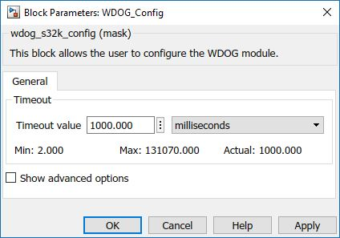
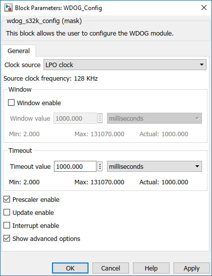

WDOG Configuration Block
This block is used to configure the parameters of the WDOG module.
Block Image

Inputs:
- None
Outputs:
- None
Parameters and Dialog Box
The block dialog consists of the following tab:
General
The General tab contains the following parameters:
Timeout value
This value is used to set the timeout period of the watchdog.
Depending on the selected unit, the value is treated as time or clock cycles.
The time value is converted into clock cycles based on the selected clock source.
The timeout counter register contains the number of clock cycles as a 16-bit value.
Show advanced options
Selects advanced options.
Clock source
Selects the clock that feeds the watchdog counter.
- Bus clock
- LPO clock
- SIRC clock
- SOSC clock
Window enable
This write-once bit enables window mode.
Window value
This value is used to set the timeout period of the watchdog.
Depending on the selected unit, the value is treated as time or clock cycles.
The time value is converted into clock cycles based on the selected clock source.
The window counter register contains the number of clock cycles as a 16-bit value.
Prescaler enable
This write-once bit enables a fixed 256 pre-scaling of watchdog counter reference clock.
Update enable
This write-once bit allows software to reconfigure the watchdog without a reset.
- Unchecked - Updates not allowed. After the initial configuration, the watchdog cannot be later modified without forcing a reset.
- Checked - Updates allowed. Software can modify the watchdog configuration registers within 128 bus clocks after performing the unlock write sequence.
Interrupt enable
This write-once bit configures the watchdog to immediately generate an interrupt request upon a reset
triggering event (timeout or illegal write to the watchdog), before forcing a reset.
After the interrupt
vector fetch (which comes after the reset-triggering event), the reset occurs after a delay of 128 bus
clocks.
- Unchecked - Watchdog interrupts are disabled. Watchdog resets are not delayed.
- Checked - Watchdog interrupts are enabled. Watchdog resets are delayed by 128 bus clocks from the interrupt vector fetch.
Block Dependency
- None
Block Miscellaneous Details
- None